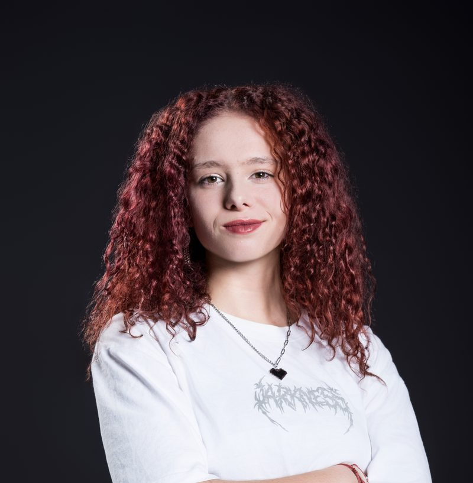

Angehende Applikationsentwicklerin · IMS Kantonsschule am Brühl, St. Gallen

Studierende jonglieren zwischen Vorlesungen, Lernphasen und Freizeit — oft ohne strukturierten Plan. ChronoCoach ist eine Webanwendung mit integriertem KI-Coach, die per Chat personalisierte Wochenpläne erstellt, Lernzeiten nach dem Energielevel optimiert und den Fortschritt in Echtzeit verfolgt. Inklusive Wochenkalender, Tagesansicht, Aufgabenverwaltung und Onboarding-Flow.
Fotografie ist mein kreativer Ausgleich zur Programmierung. Für die Präsentation meiner Bilder habe ich eine eigene Galerie-Website entwickelt — mit automatischer Bildsynchronisation via Node.js-Script, optimierter Bildkompression und einem auf meine Ästhetik abgestimmten Layout. Aktuell in Weiterentwicklung.
Eine strukturierte Dokumentationsseite, die Unterrichtsinhalte und Aufgaben aus mehreren IMS-Modulen zusammenfasst — von Datenmodellierung und SQL über UML-Klassendiagramme bis zur objektorientierten Programmierung in C#. Dient als Nachschlagewerk und Lernressource.
Was mich antreibt, geht über den Lehrplan hinaus: Ich baue Projekte, die echte Probleme lösen, organisiere seit zwei Jahren die «Notebookdays» für neue Schülerinnen und Schüler und setze mich intensiv mit den Möglichkeiten von KI auseinander.
Im Praktikum suche ich die Chance, mein Wissen in einem professionellen Umfeld einzusetzen, von erfahrenen Entwicklerinnen und Entwicklern zu lernen und herauszufinden, wo ich in einem Team den grössten Beitrag leisten kann.
Ich freue mich über eine Nachricht — gerne auch für ein persönliches Gespräch.